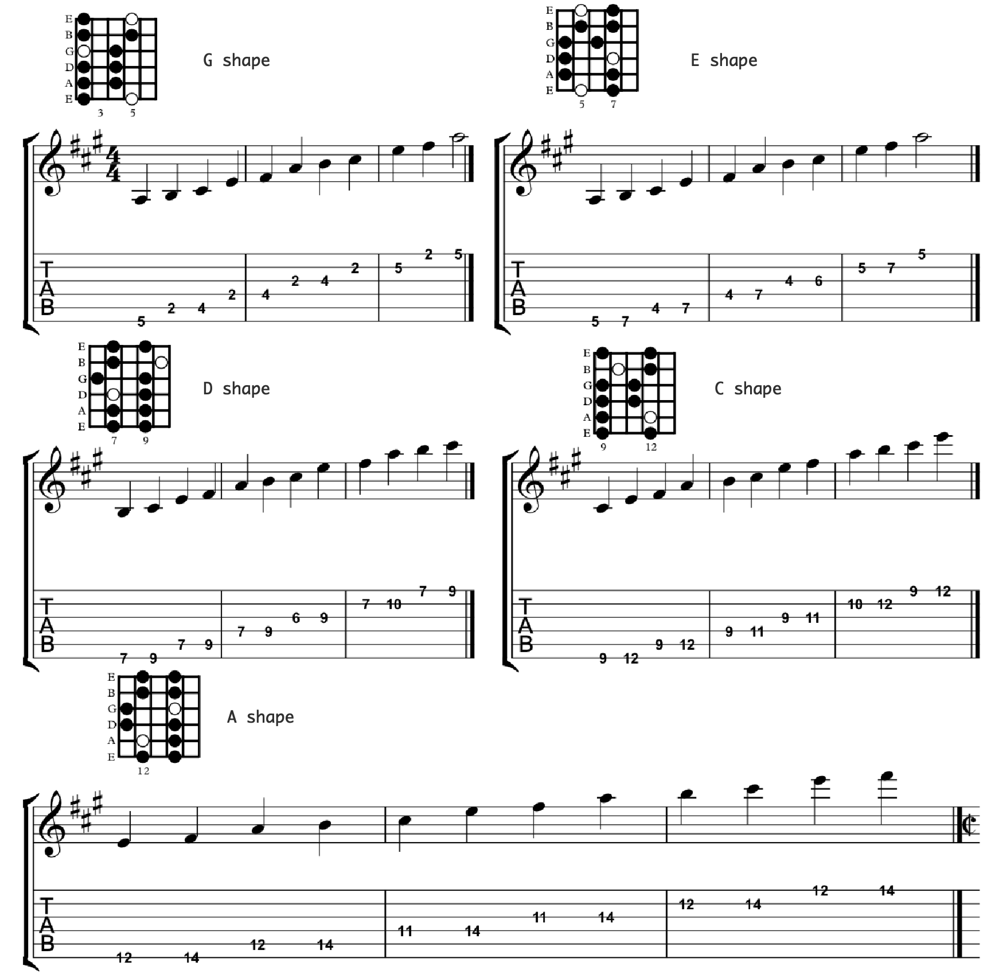

..
caged penatonic

- 必须要记住主音在吉他的位置。
- 需要能够自由转换。 比如由
G shape转换到E shape, 通过 关键音 + 肌肉记忆 + 把位记忆 的方式
- Key on Key Penatonic. 比如 当前是 D 和弦, 则转换为 D Major Penatonic, E 则换为 E Major Penatonic 以此类推
- Minor Penatonic: A Major -> A minor, 只需要往下移动三品. 如 A Minor 为 C Major Penatonic 的音
- 练习的时候可以 pick 和 手指 交替拨弦
- Slow Blues Jam Backing Track (Key of A)